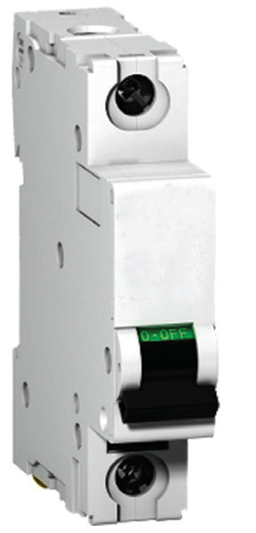
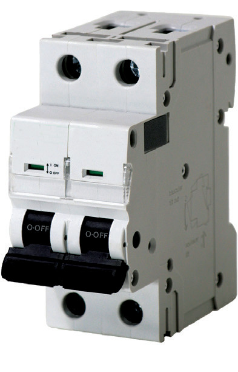
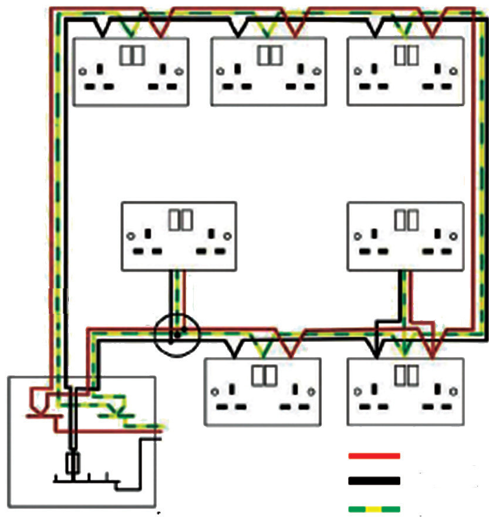

wire has much lower resistance than the bulbs. This results in a large current flow, hence, the melting of a fuse wire.
A circuit breaker like the ones shown in Figure 2.47 is a type of switch that cuts off the flow of current when the current in a circuit exceeds a specific value. It operates by opening the circuit in the event of excess current. Unlike a fuse, a circuit breaker can be reset once the current in a circuit has returned to normal. However, like a fuse, a circuit breaker is connected in series with the circuit it controls.
In a circuit breaker, switch contacts are held closed by a latch mechanism that releases the contacts quickly to open the circuit.


Domestic wiring
The power company connects power to a house up to the meter and leaves cables to be connected to the consumer unit where the house wiring starts. A consumer unit is a type of distribution board that distributes electricity from the main supply to separate circuits. From the consumer unit, the cables branch into several parallel circuits which carry current to the various parts of the house. There are two methods of wiring a house from the main switch: the ring and tree systems.
Ring main system.
In many houses, the main sockets are connected to a ring main. This cable begins and ends at the consumer unit. It has live, neutral, and earth wires, each forming a ring around the house or part of the house. In a circuit, the current has two parts, so thin cables can be used. The sockets usually have a 30 A fuse at the consumer unit. Figure 2.48 shows a typical ring main circuit.

The tree system method uses a cable from the main switch to the distribution box as shown in Figure 2.49. Of these two methods of wiring, the ring system is more convenient for wiring modern houses than the tree system.